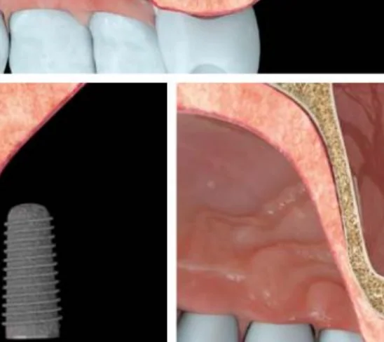
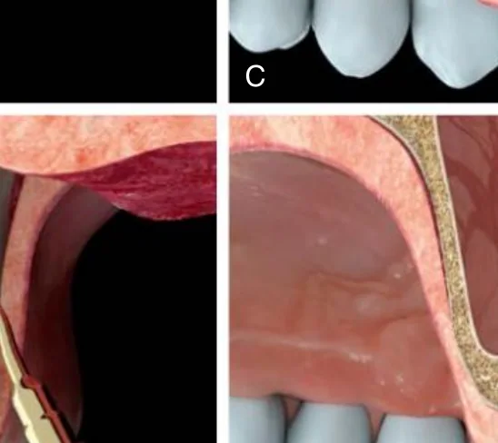
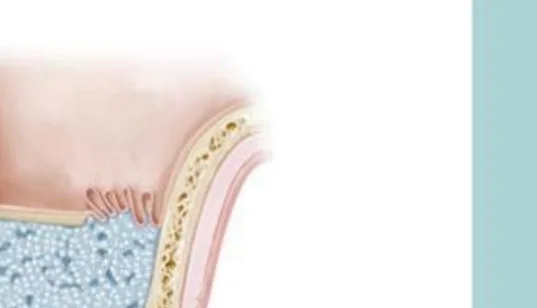

نسخه استخراجشده؛ ترجمه یا تأیید علمی انجام نشده است. وضعیت: captured
خلف فک بالا سختترین ناحیه ایمپلنت است و سه دلیل مستقل دارد که با هم جمع میشوند:

یعنی دقیقاً جایی که بیشترین بار وارد میشود، ضعیفترین استخوان و کمترین ارتفاع را داریم. راهحل، سینوس لیفت (sinus elevation) است.
ممبران شنایدرین، پوشش داخلی سینوس، ساختاری است که کل تکنیک حول حفظ سالم آن میچرخد.
| رویکرد جانبی (Lateral window) | رویکرد کرستال (Osteotome / Summers) | |
|---|---|---|
| مسیر دسترسی | پنجرهای در دیواره جانبی سینوس | از داخل محل ایمپلنت، از بالا |
| ارتفاع استخوان باقیمانده | کمتر از حدود ۴ تا ۵ میلیمتر | بیشتر از حدود ۵ تا ۶ میلیمتر |
| میزان افزایش ارتفاع | زیاد و قابل کنترل | محدود — معمولاً تا حدود ۳ تا ۴ میلیمتر |
| دید بر ممبران | مستقیم | غیرمستقیم — «کور» |
| تهاجم و تورم | بیشتر | کمتر |
قاعده انتخاب ساده است: ارتفاع استخوان باقیمانده تصمیم میگیرد، نه ترجیح جراح. با ارتفاع کم، رویکرد کرستال نه ثبات اولیه میدهد و نه افزایش کافی.

در رویکرد جانبی، اگر ارتفاع باقیمانده اجازه ثبات اولیه بدهد، ایمپلنت میتواند همزمان قرار گیرد؛ در غیر این صورت، جراحی دومرحلهای با فاصله چند ماه انجام میشود.
شایعترین عارضه: پارگی ممبران شنایدرین. مدیریت آن به اندازه پارگی بستگی دارد — پارگی کوچک را میتوان با ممبران کلاژنی پوشاند و ادامه داد؛ پارگی بزرگ معمولاً به توقف عمل و انجام مجدد پس از چند ماه میانجامد.

عوامل افزایشدهنده خطر پارگی: ممبران نازک، سپتوم زیر آنترال (سپتوم آندرووود) که سینوس را تیغهتیغه میکند، دیوارههای همگرا، و سابقه جراحی سینوس.
منعهای مطلق و نسبی: سینوزیت حاد، عفونت فعال دندانی مجاور، انسداد مجرای اُستیوم که تخلیه سینوس را مختل میکند، تومور، و سابقه تابش پرتو. سیگار در اینجا هم عامل خطر مهمی است.
پیشآگهی: بقای ایمپلنت پس از سینوس لیفت در مطالعات بلندمدت بالای ۹۰ درصد است — یعنی این تکنیک با وجود دشواری، بسیار قابل پیشبینی است.
پس از عمل: بیمار نباید فین کند، از نوشیدن با نی و بلند کردن اجسام سنگین پرهیز کند؛ عطسه باید با دهان باز انجام شود. افزایش فشار داخل سینوس، پیوند تازه را جابهجا میکند.
⚠️ اشتباه رایج ۱: انتخاب رویکرد جانبی یا کرستال را ارتفاع استخوان باقیمانده تعیین میکند، نه ترجیح جراح.
⚠️ اشتباه رایج ۲: شایعترین عارضه، پارگی ممبران شنایدرین است؛ سپتوم آندرووود خطر آن را بالا میبرد.
⚠️ اشتباه رایج ۳: پس از عمل، فین کردن و نوشیدن با نی ممنوع است و عطسه باید با دهان باز انجام شود — افزایش فشار سینوس، پیوند تازه را جابهجا میکند.